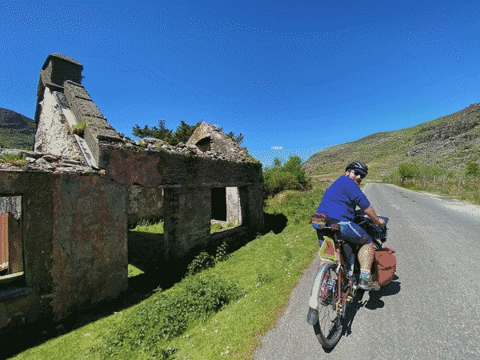

My name is Travis, and I am a software engineer living in Philadelphia with my spouse, Ruby, and our two cats, Topaz and Basil. I am interested in gardening, bike touring, and solarpunk living.
I am currently working as a Developer & Data Analyst in the Digital Innovation Lab at Community Legal Services of Philadelphia. I have previously worked at Element 84, Azavea, and Urality.
I am actively volunteering as one of the co-directors of Code for Philly. I previously served as the tech lead for the Expungement Petition Generator benefitting Philadelphia Lawyers for Social Equity, and helped put together a third places finder as part of Code for Philly's Launchpad 2023.
Before transitioning into working in tech, I spent about 5 years working in the bicycle industry as a mechanic and bike tour organizer. I am also an Americorps alum who served in City Year Philadelphia. I have ridden two cross-country bike tours with Bike & Build, and another on the full East Coast Greenway with my best friend.
